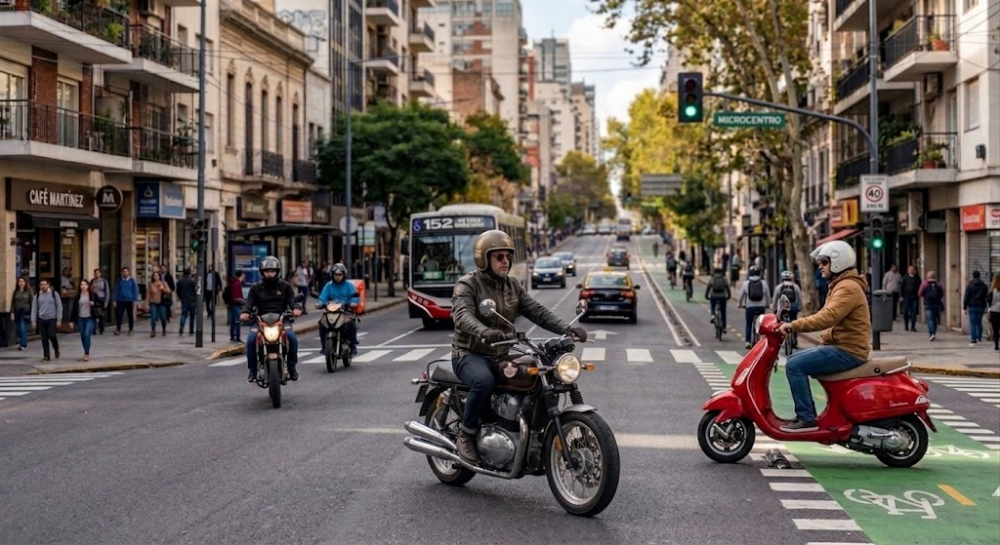
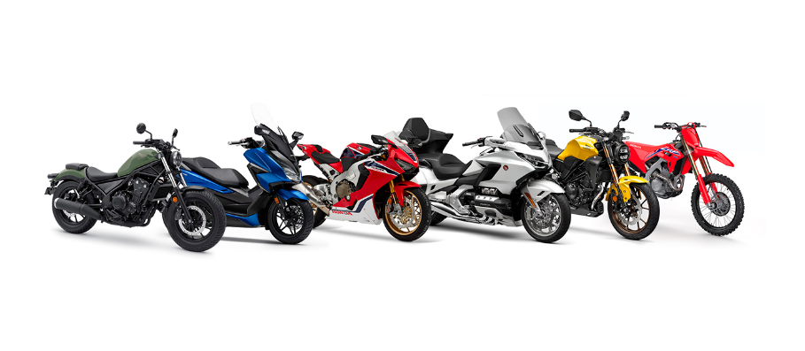
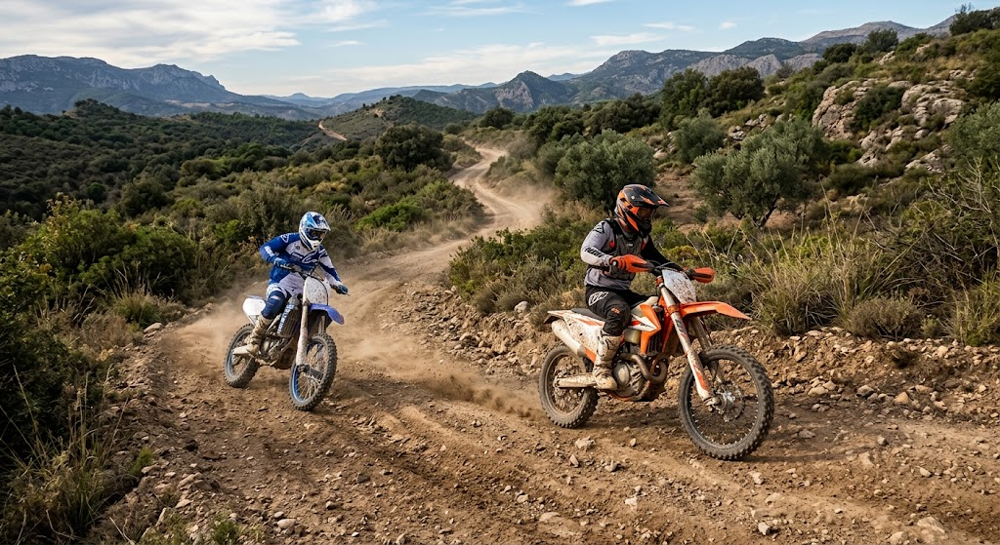
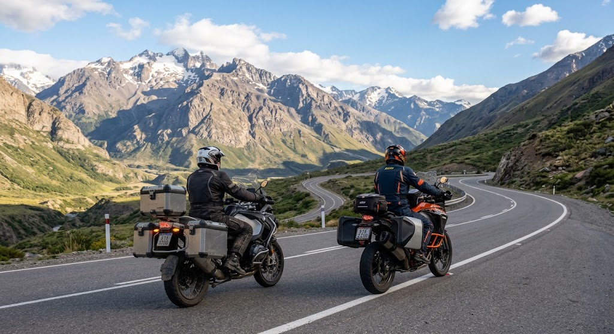

Ciudad
Para moverte diariamente por la ciudad, ir al trabajo, estudiar o realizar recorridos cortos.

Elegí CIUDADElegir una moto puede ser difícil. Te ayudamos a encontrar la moto que mejor se adapte a vos. Conocé los diferentes tipos de motos, sus características y los usos para los que fueron diseñadas.

Para moverte diariamente por la ciudad, ir al trabajo, estudiar o realizar recorridos cortos.

Elegí CIUDADPara circular por caminos de tierra, terrenos irregulares y realizar actividades fuera del asfalto.

Elegí ENDUROPara recorrer largas distancias, viajar por carretera y disfrutar de trayectos más largos.

Elegí VIAJESLa cilindrada indica el tamaño del motor y suele estar relacionada con la potencia de la moto.